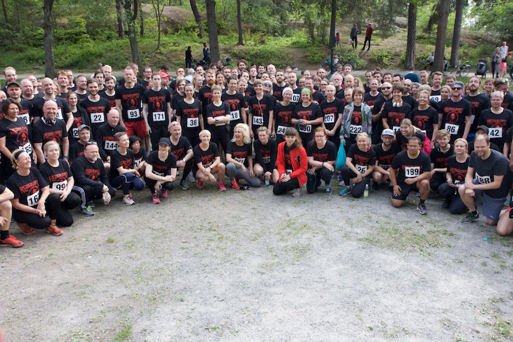

Årets Greiderlopp startas kl 16:00 den 20 maj!
Greiderloppet är ett ideellt arrangerat motionslopp som sträcker sig runt Årstaviken. Varje år i mitten av maj samlas motionärer och politiskt intresserade vid Årstaliden för att tillsammans runda Årstaviken. Greiderloppet förespråkar en sund motionsanda och Göran Greider delar ut pris till de som sprungit under längst tid. Men det viktigaste är att vi gör det tillsammans!
2016 samlades det in 43472 kr till den ideella verksamheten
Vi Gör Vad Vi Kan, som hjälper de flyktingar som offrar sina liv för att ta sig till ett bättre liv i Europa, främst på ön Lesbos.
Här kan man läsa mer om organisationen och vad de gör
I år går alla pengar till nätverket
Ingen människa är illegal som bl.a. hjälper flyktingar som gått under jorden. Greiderloppet stödjer också frågan om flyktingamnesti, och motsätter sig de deporteringar av flyktingar som redan börjat ett nytt liv i Sverige. Läs mer om situationen
här och
här.
Här kan du också skriva under en namninsamling som vänder sig specifikt till deporteringen av de afganska ungdomarna.
Loppet är döpt efter Årstaprofilen Göran Greider vars anda genomsyrar loppet! Vi hoppas bli många löpare i år och kommer inte sätta någon egentlig gräns på antalet. Däremot måste vi stänga anmälan i god tid innan loppet för att kunna förbereda för det antal som vi blir.
Greiderloppet är en folkfest, kom och heja på löparna! Vill du vara med som volontär eller bidra på annat sätt?
Mejla oss. Alla volontärer kommer att bli särskilt firade!
Starten går från dansbanan vid Årstaliden och loppet sträcker sig runt Årstaviken. En länk till bansträckningen finns här.
Om tröjorna: I anmälningsavgiften ingår en t-shirt. Den är ekologisk och rättvisemärkt, och framförallt i mjuk bomull. De har också ftalatfria tryck. Läs mer om tröjorna
här.
Anmälan öppnar snart igen. Systemfel hos de som hostar vår platform.
Bra att veta
Anmälningsavgift: 300 kr
I avgiften ingår förutom en tröja, korv och öl efter målgången.
Det finns också en vätskekontroll!
Starten
Starten går från Årstaliden, vid en dansbana som ligger mellan Sköntorpsvägen och Ottsjövägen i Årsta. Här kommer finnas ett sekretariat som öppnar några timmar innan start och här måste man registrera sig för att få t-shirt och nummerlapp. De tre startgrupperna startar med viss fördröjning för att underlätta tidtagning. Man kommer inte att kunna byta om vid starten, så kom ombytt! Värdesaker går att lämna, men vi kan inte ansvara för något. Toalett finns också tillgänglig. Kom i tid! Vid starttiden ska man vara ombytt och med nummerlapp på bröstet!
Loppet
Loppets sträckning kommer vara tydligt markerad men följer Årstavikens strand. En vätskekontroll finns utplacerad nära Eriksdal. Tidtagning utförs av funktionärer som ställer upp gratis och några finns även utplacerade längs vägen för att hjälpa löpare att hitta rätt. Värt att veta är att det inte finns några avspärrningar och att man kan råka hamna mitt i en broöppning (!).
Målgång
Efter alla har gått i mål så blir det korv och dryck och sedan prisutdelning!
Barngreider
I år kommer vi också att anordna något för barn (upp till 10 år). Barngreider är ett lopp på 400 m som går innan det stora loppet, kl 14:30. Anmälan kostar 50 kr och då får man givetvis en korv, dryck och medalj!
FAQ
Fråga: Kommer det att finnas möjlighet att förtära ett vegetariskt alternativ efter loppet?
Svar: JA. Vegokorv (soyakorv). I år kommer den inte att ta slut.
Fråga: När stänger anmälan?
Svar: Början på april, vi behöver tid att få hem tröjor och förbereda funktionärerna.
Fråga: Kommer Göran Greider att springa?
Svar: Göran gör alltid sitt bästa för att komma till start. Förra året sprang han Barngreider tillsammans med sin hund.
Fråga: Kan man skänka extra pengar?
Svar: Ja, man kan till exempel swisha (0736147410) eller betala extra vid anmälningen. Eller helt enkelt donera mera på egen hand!
Om arrangörerna
Greiderloppet anordnas av Olov von Hofsten, Anders Lötstedt och Maria Telenius (Barngreider).
Vi nås på
greiderloppet@gmail.com eller på instagram,
@greiderloppet eller twitter
@greiderloppet. Man kan också prova ringa 0736147410.
Greiderloppet 2016
